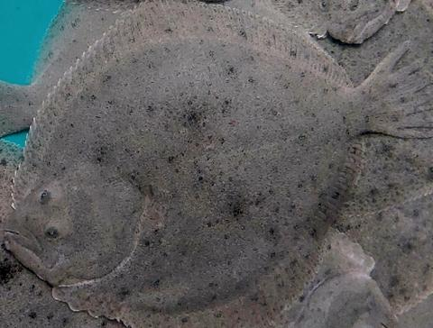

Antón Vila‑Sanjurjo · Associate Professor of Genetics, Universidade da Coruña · Ph.D. in Biology, Brown University (Providence, RI), 2001

More than 90% of the turbot consumed in the world comes from aquaculture and in Europe the main turbot producer is Spain and more specifically Galicia, with around 70% of European production. This is a very consolidated production that has placed the Galician region (the only producer in Spain) at the head of the world's main producers.
One of the factors that most affects animal production, in this case turbot production in aquaculture, is the presence of bacterial infections. In the project we are talking about today, the bacterium under study is Aeromonas salmonicida which, despite its name, affects several species of fish and its infections lead to losses of profitability for the companies.
For this reason, GIBE researchers Antón Vila and Natalia Mallo (CICA – University of A Coruña), the Technological Centre of the Aquaculture Cluster (CETGA), Stolt Sea Farm and Cenavisa have initiated the project "Development of Microencapsulated Vaccines against Aeromonas salmonicida in Turbot" (MIVALI) . The objective is to develop microencapsulated vaccines that improve the survival of this species in culture.
The MIVALI project (CPP2021-008795) is funded by the Ministry of Science and Innovation Recovery, Transformation and Resilience Plan. It will run until October 2025.
Aeromonas is a genus of Gram-negative, facultative anaerobic, bacillus-shaped proteobacteria. More than a dozen species have been described and most have been associated with human or animal diseases. They are ubiquitous organisms of fresh and brackish water.